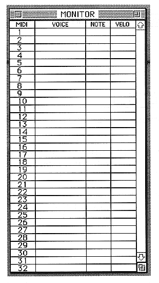

MIDI
MIDI channel.
0 to 31 is fixed and displayed.
VOICE
SCSP voice name corresponding to the program change of the MIDI channel received by SCSI
It is displayed.
NOTE
Displays the note received via SCSI.
VELO
Displays the velocity number received via SCSI.